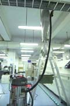

環境賀爾蒙(EDCs內分泌干擾素)
著隨著生活水準提高,人類使用化學合成製品越來越普遍,(塑膠. 殺菌劑.消毒水.殺蟲劑..塗料.化妝品.香水.農藥..)各類含苯.酚.氯等日用品皆可形成對人體不同影響,它雖然造就了經濟繁榮與個人便利, 但是也因此擾亂了動物內分泌正常機制,上述物質稱之 環境荷爾蒙(VOCs)又可稱 EDCs內分泌干擾素,
它可模擬人體荷爾蒙(激素)並擾亂內分泌之物質, 也是擾亂生殖系統與致癌的化學物質,後遺症可能禍延第二代甚至第三代，在我們的生活中,每天和這些擾亂內分泌之化學物質共存,這些產品造成VOC的揮發(揮發性有機化合物),在美國EPA研究中環境荷爾蒙 (environm-ental hormone)會影響甲狀腺及腎上腺,日本研究單位也指出會影響生殖.免疫.代謝.腦部….等發展,以及許多不明過敏都是其所引起它具有對疾病產生相乘效果的致癌效果,
環境賀爾蒙代表物
內分泌干擾物
 世界衛生組織(WHO)因此特別制訂了一套標準.來改善此問題,在日本制訂了會影響人類之環境賀爾蒙,以戴奧辛為主並包括三種重金屬,已確定的共70種有害物,在此內有許多有害物已是我國環保署所列管, 尤其在新居部份,許多化學物質需要2-3年才會慢慢釋放到WHO之室內安全標準,國外已有多起官司,因建商使用不良材料,造成室內空氣化學污染,造成人体傷害,而被求償.而象徵被有害化學物質污染環境所發生的環境賀爾蒙（Hormon）問題成為威脅人類生存的深刻問題。 還有許多例子是發生於焚化爐的戴奧辛(dioxine)，用於船底塗料的有機錫化合物、DDT、和BHC農藥、（PCB多氯聯苯）使用於建材的溶繫劑和接著劑，含在排氣中Benz pyren（致癌物質）， 這些各種各樣的化學物質成為分泌攪亂物質像Hormon作用於人体而引起過敏症或先天皮膚炎，化學物質過敏症,現在日本人有半數人口患有這種過敏症，如環境Hormon，其濃為1兆分之一克（1/1012）的級低濃度仍能作用而污染水、大氣、土攘，除此外,在我們居住環境中,衣服.家俱.化妝品.清潔劑...等等被添加大量的化學物,許多化學物都是超過who(世衛組織)標準,且有部份已被認為致癌物,在這些物質內會使得內分泌攪亂,生物之影響包含不孕或精虫減少.腫瘤....作用 2008年在台灣有則醫療新聞,是一對夫妻住進新家，其夫罹患「局部性腎絲球硬化症」，並且治療了3年,當醫師前往他家裡檢驗才發現禍首是因為他家的建材家具，不斷散發化學物質,在國外稱之為Sick house(病屋症後群),所以在遷入新 裝璜住宅時，門窗大開保持空氣對流，降低這些有害物質在空氣中的濃度。 2007年英國的醫學研究指出，市面上的沐浴乳、化妝品.等，普遍使用的合法防腐劑「經基苯甲酸酯(Paraben)」它會影響雌激素分泌，對於青少年和小孩會造成荷爾蒙失調,因此傳統並且無害的石鹼,近年來反而造成大賣,另外還有苯二甲酸鹽是,許多香水都有這種成分，它具有肝毒性，是男性的精子殺手， 也會造成女性性早熟。
曾經造成美國轟動一時著名的環保書-失竊的未來Our Stolen Future中提到多氯聯苯經由食物鏈，曾使美國五大湖區的鳥類、魚群內分泌遭受破壞，影響智力與生殖力，面臨存續威脅。

環境賀爾蒙案例